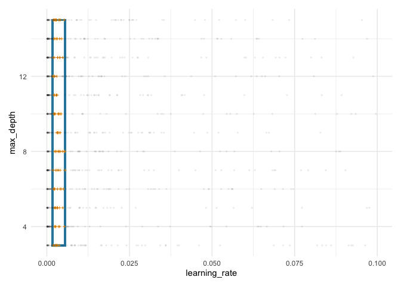

Overview
spacefinder identifies promising subspaces within hyperparameter spaces by fitting geometric regions (hyperrectangles and ellipsoids) to high-performing configurations from hyperparameter tuning benchmarks.
Key features:
- Three learner types: Box (axis-aligned), Polygon (oriented), and Ellipsoid
- Handles categorical hyperparameters by fitting separate subspaces per level
- Beta density estimation for probabilistic sampling (
augment()) - Visualization tools for fitted subspaces (
autoplot()) - Works with multi-task benchmark data
Installation
Install the development version from GitHub:
# install.packages("pak")
pak::pak("NikoGerman/spacefinder")Quick Start
library(spacefinder)
# Load example data
data(benchmark_data)
# Create task
task <- TaskSubspace$new(
data = benchmark_data,
target_measure = "auc",
hps = c("learning_rate", "max_depth")
)
# Fit axis-aligned hyperrectangle
learner <- LearnerSubspaceBox$new(task)
learner$train(q_val = 0.9)
# View fitted bounds
coef(learner)
#> hyperparameter min max
#> <char> <num> <num>
#> 1: learning_rate 0.001746421 0.00554191
#> 2: max_depth 3.000000000 15.00000000
# Visualize fitted subspace
ggplot2::autoplot(learner)
Documentation
Learn more about spacefinder:
-
vignette("getting-started", package = "spacefinder")- Basic workflow and concepts -
vignette("learner-comparison", package = "spacefinder")- Comparing Box, Polygon, and Ellipsoid learners
-
vignette("categorical-hyperparameters", package = "spacefinder")- Working with categorical variables -
vignette("density-estimation", package = "spacefinder")- Probabilistic modeling withaugment()
Or browse online at https://nikogerman.github.io/spacefinder/